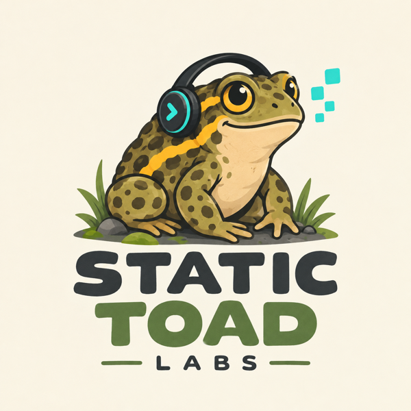

Indie game studio · IrelandSmall games.
Small games.
Big hops.
Static Toad Labs makes bite-sized, beautifully crafted puzzle and arcade games for iPhone and iPad.
See our gamesGet in touch
About
A one-toad studio
Static Toad Labs is an independent studio run by Chris O'Brien in Ireland. We build focused, polished mobile games you can pick up in seconds and keep coming back to.
🎮 Play-first designEasy to learn, satisfying to master — no clutter.
🔒 RespectfulFair monetisation and privacy taken seriously.
📱 Built for iOSCrafted for iPhone and iPad, tuned for every screen.
Showcase
Our games
Say hello
Feedback, bug reports, press or partnerships — we'd love to hear from you.
cobrien@statictoadlabs.com